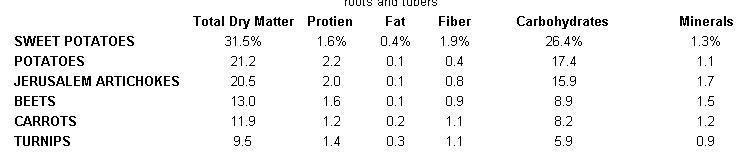
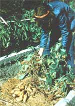

The 'Grow Anywhere' Bush Sweet Potato
Do you have a small garden and a yen for yams? Then take a tip from Gordon Solberg, and try...
By the Mother Earth News editors
January/February 1979
Sweet potatoes are easy to grow (and, of course, delicious) but, because these plants sprawl out in vines of up to 16 feet long, they're often ignored by gardeners who have a limited space to work with.
Fortunately for all of us fans of the golden roots, however, there are several sweet potato varieties that produce a bush-type growth that won't overrun every other crop in the garden. And - best of all - the "small-topped" species yields tasty, full-sized tubers!
These "bush" breeds (the most common of 'em is called "Porto Rico") are available through most seed outlets. The Burpee Seed Company (www.Burpee.com), the Gurney Seed and Nursery Company (www.Gurneys.com), and the George W. Park Seed Company, Inc. (www.ParkSeed.com) all carry bush sweet potatoes. The price, from any of these firms, will start at about $12.00 for 25 plants, and any potatoes that you order will be delivered as soon as the weather is warm enough (usually around mid-May) to allow the young sprouts to survive the trip.
FIRST PREPARE, THEN PLANT
If your garden has a sunny area that's already rich in organic matter, a thorough workout with a rototiller will be about all the "sweet potato preparation" you'll need. Average soils, however, will require plenty of compost or well-rotted manure, as well as bone meal (for potassium) and wood ashes (for potash). Avoid nitrogen fertilizers, though, unless your soil really needs them, because too much of this element will produce plants with enormous tops and spindly little potatoes.
When your small "bushes" arrive, soak their roots in water for a few hours, and then plant them at three-by three-foot intervals in the ground you've prepared. The potatoes will spread enough to fill that much space and will produce bigger tubers if you don't try to crowd them.
WEED, WATER AND DON'T WORRY
Once the plants are in the ground, just give 'em a deep watering once a week (especially if your area's rainfall is unpredictable) and keep the weeds down. Then, you can simply let these hearty vegetables take care of themselves!
(It's true that sweet potatoes are vulnerable to a number of fungi, viruses and nematodes, but these disasters seldom hit healthy plants in good soil. Most of my pest problems have been with tiny beetles that chew buckshot-sized holes in the leaves. These bugs don't seem to have any effect upon the potatoes' roots, though, so I usually just leave them alone.
HARVEST TIME
Your yams will be ready to harvest after the first frost blackens and kills their leaves. (Sweet potatoes just keep getting fatter until their "tops" die, so don't dig 'em up before they've finished growin'.) Use a shovel to bring in your potato crop, and remember that these roots extend straight down from the plant's crown. So, keep that spade vertical, or you'll cut a lot of tubers in half! Then, once the harvest is all aboveground, sort out any shovel-damaged potatoes and, since they won't keep long when cut, eat 'em right away in a celebration feast!
The uninjured roots, however, will store well, especially if you cure them for a week at a temperature of 80 to 85°F and a relative humidity of 85 to 90%. This prevents the infection of any "wounds" and speeds up the inner chemistry that changes starch into sugar, so it sure won't hurt the flavor of your potatoes any!
Ideally, you should store the cured roots at a temperature of between 50 and 55°F and a humidity of about 80%, but I just hang my undamaged tubers in a burlap sack immediately after harvest, and I've never had any storage problems. (Of course, I usually eat my whole crop in a month or two. If you want to keep a winter's supply of sweet potatoes, it would pay to follow the cure-and-store directions closely.)
And, since yams have easily bruised skins, be sure to handle them gently. In fact, even if you are careful, it's worthwhile to sort through your storage bin occasionally just to be sure that no "bad apples" are ruining your whole sweet potato supply.
PLAN AHEAD
When you dig up your first crop of luscious roots, you'll probably notice a lot of finger-sized tubers growing in among the large ones. I use these tiny roots to maintain my sweet potato strain over the winter and to avoid the expense of buying new plants every spring.
This money-saving trick is easy enough for anyone to try. Just plant those small yams indoors in pots of rich soil. Within a couple of weeks, two or three shoots will emerge from each root. The little plants will continue to grow slowly all winter long, and they'll add a nice touch of green to any drab windowsill.
Later in the year, when early spring brings increased sunlight, each potted tuber will send up half a dozen or so more sprouts. Just let these grow until a couple of weeks before planting time, then carefully dig up each entire plant and separate the individual shoots. (It's a good idea, though not absolutely necessary, to cut the potatoes so that each plant will get a hunk of root.)
As you separate the sprouts, plant them in styrofoam cups filled with potting soil. Then, just be sure that the cuttings have plenty of water and sunlight. In a few weeks they'll double their growth and fill the cups with roots. Plants prepared this way will be stronger than any mail-order sweet potatoes, and - when the danger of frost is past - you can plant these hearty "babies" and begin the cycle again!
(If your garden is large enough to accommodate vining-type sweet potatoes, you can use a similar "homegrown" method to get your first batch of plants for the price of one supermarket yam and several toothpicks. Just suspend the storebought tuber (by imbedding a few 'picks in it) in a glass of water, and transplant the shoots that result into individual pots when they're about six inches long. Then, when it's time to plant, your "bargain" yams will be ready for the garden.)
EAT HEARTY!
No matter which variety of sweet potatoes you grow, bush or vine, they're sure to be a real culinary treat. Homegrown yams are sweeter, and a little more colorful, than the store-bought kind. If you've never grown these luscious golden roots, give 'em a try. They'll repay your garden labor with a whole lot of fine winter eatin'!
And, when you dig up your first crop, be sure to try my "secret" yam recipe: [1] Boil the tubers until they're tender, [2] mash 'em up with a big dab of honey and lots of real butter, and then, [3] it's time to praise the Lord and pass the sweet potatoes!
|
TOP: The bush sweet potato is a variety that's delicious and easy to grow, and - best of all - the species produces luxuriant growth which won't overrun every other crop in your garden. The "bush" breeds (the most common is called "Porto Rico") are available through most seed outlets. |
 In case you're wondering, here's how the food value of the sweet potato (Ipomoea batatas) stacks up against some other common roots and tubers. |
 Homegrown yams are sweeter and more colorful than the store-bought kind. The bush-topped variety produces tasty, full-sized potatoes, but no matter which type you grow, bush or vine, when you grow your own yams, they're sure to be a culinary treat. |
 Your yams will be ready to harvest after the first frost blackens and kills their leaves. (Sweet potatoes just keep getting fatter until their "tops" die, so don't dig 'em up before they've finished growing. Use a shovel to bring in your potato crop, and remember that these roots extend straight down from the plant's crown. So keep that spade nearly vertical when you dig, or you'll end up cutting a lot of tubers in half! |
|
|